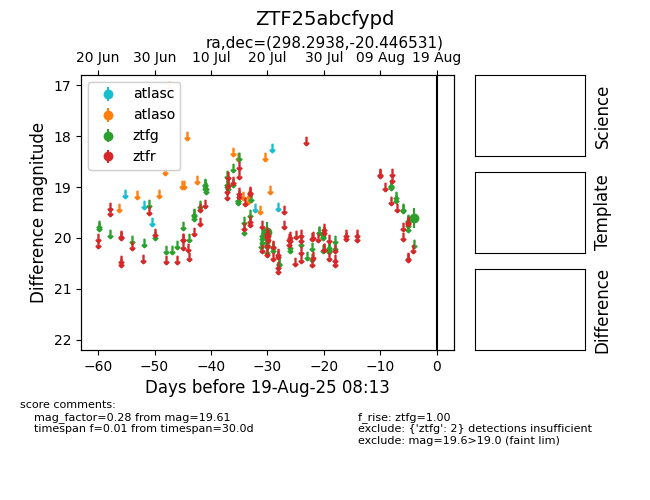

Target ZTF25abcfypd at 2025-08-19 08:13, see:
FINK: fink-portal.org/ZTF25abcfypd
Lasair: lasair-ztf.lsst.ac.uk/objects/ZTF25abcfypd
ALeRCE: alerce.online/object/ZTF25abcfypd
alt names
ZTF25abcfypd (ztf,fink)
coordinates:
equatorial (ra, dec) = (298.2938,-20.44653)
galactic (l, b) = (20.6159,-22.40953)
photometry
last ztfg=19.61
2 ztfg detections
